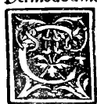
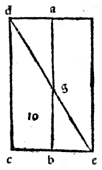
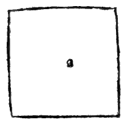
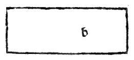
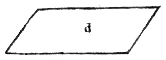
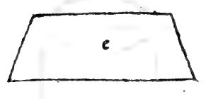

CAPITEL LXII¶
Von der Art, alle Sorten Säulen auszumessen, und zwar zuerst von den runden.

Es scheint mir nunmehr angemessen, das Verfahren, alle Arten von Säulen ausmessen zu können, darzustellen. Ungeachtet wir darüber vollständig in unserm grossen Werke gehandelt haben, werde ich dies doch kurz als einen Abriss Euer Hoheit vorführen, und zuerst bezüglich aller runden, hinsichtlich deren Dieses allgemein als Regel gilt.
Zuerst messe man eine ihrer Grundflächen, indem man sie nach der Annäherungsmethode auf’s Quadrat reducirt, die vom edlen Geometer Archimedes gefunden, in seinem Buche unter der Rubrik von der Quadratur des Kreises aufgestellt, und in unserm Werke mit ihrem Beweise angeführt, nämlich folgendermassen: Man finde den Durchmesser der Basis und dieser werde mit sich selbst multiplicirt: vom Producte nehme man “/u» - ‘-Vierzehntel oder Vierzehntheile, und wenn man diese mit der Höhe der Säule multiplicirt, so ergibt dies letzte Product die körperliche Masse der ganzen Säule, z. B. um dies besser zu verstehen: Es sei die runde Säule abcd, deren Höhe ac oder hd gleich IO sei, und von den Durchmessern der Säule der eine ab und der andere cd jeder 7.
Ich sage, um den Flächeninhalt dieser und Jeder anderen ähnlichen zu bestimmen, nehme man einen der genannten Durchmesser, welcher es auch sei, ab oder de, worauf nichts ankommt, da sie gleich sind, nämlich 7, und dieses 7 muss man mit sich selbst multipliciren, das macht 49 und von diesem sage ich, nehme man /u, was 38 1/2 ergibt. Und diese sage ich, multiplicire man mit der Höhe oder Länge der ganzen Säule, d. h. mit bd oder ac. Nehmen wir 10 hierzu, so macht das 385, und so gross nennen wir die ganze Ausdehnung oder körperlichen Inhalt der ganzen besagten Säule.
Und dieser Fall, erhabener Herzog, will sagen, dass wenn diese Zahlen Ellen irgend welcher Art bedeuten, in denselben 385 kubische Quadern sein werden, d. h. wie Würfel, nach jeder Richtung eine Elle, d. h. eine Elle lang, eine Elle breit und eine Elle hoch, wie die Figur hier zur Seite zeigt. Und ebenso wenn besagte Zahlen Fussmass bedeuten, ebensoviel Fuss wie hinsichtlich der Ellen gesagt, und wenn Schrittmass Schritte und bei Palmen Palme u. s. w. Und wenn man besagte Säule in Kuben auflöst, würden daraus 385 werden. Und dies genüge für den gegenwärtigen Zweck.
Nichtsdestoweniger gibt es hinsichtlich der Quadratur und Ausmessung genannter kreisförmiger Grundflächen viele andere Methoden, welche alle auf eins zurückkommen, welche wir der Reihe nach in unserm angeführten Werke vorgeführt haben.
Der Grund, warum man Vi4, d. h. von den 14 Theilen des mit sich multiphcirten Durchmessers in jedem Kreise nimmt, ist der, weil von Archimedes mit grosser Annäherung gefunden ist, dass der Kreis im Vergleich mit dem Quadrate seines Durchmessers wie 11:14 sich verhält, d. h. wenn das Quadrat des Durchmessers 14 wäre, so würde der Kreis i i sein, obwohl dies noch von keinem Gelehrten mit Genauigkeit, aber doch mit wenig Unterschied:-”) wie hier in der Figur dem Auge erhellt, dass der Kreis um so viel kleiner ist, als besagtes Quadrat, wie die Ecken des Quadrats gross sind, welche der Kreis von seinem Räume wegnimmt, welche Winkel Vu vom ganzen Quadrat, d. h. von den 14 Theilen 3 sind.
Und die 1 1 werden vom kreisförmigen Räume umfasst, wie bei dem Quadrate abcd erhellt, dass seine Seiten dem Durchmesser des Kreises, d. h. der Linie ef gleichkommen, welche ihn halbirt, indem sie durch den Punkt g hindurchgeht, der Centrum des besagten Kreises genannt wird, wie im Anfang des ersten unser Philosoph erzählt. Und so viel hinsichtlich der runden.
Marginal Woodcut Diagrams (Paganini 1509)¶

Folio 0053 Diagram 2¶

Folio 0054 Diagram 1¶

Folio 0054 Diagram 2¶

Folio 0054 Diagram 3¶

Folio 0054 Diagram 4¶